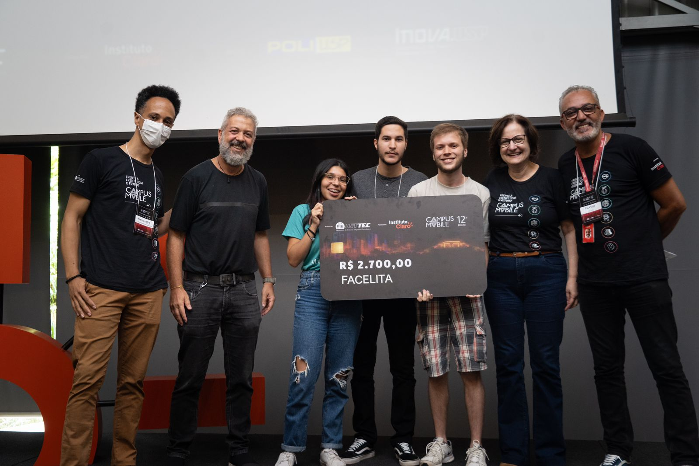
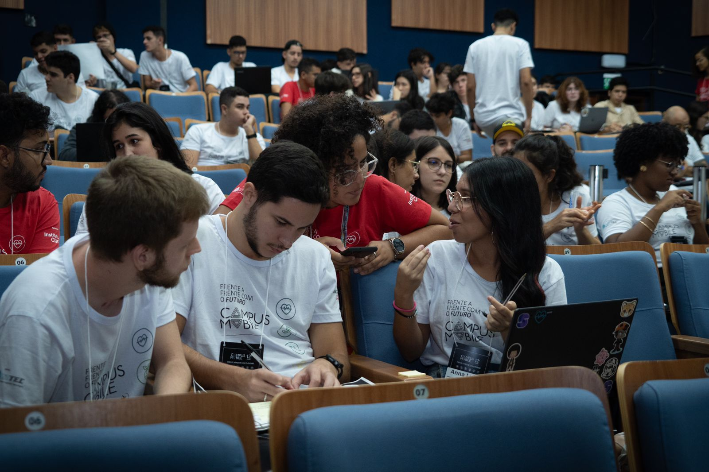
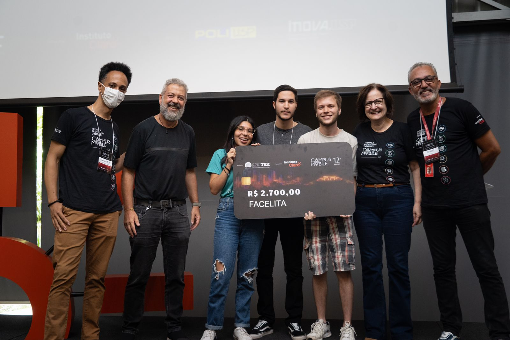
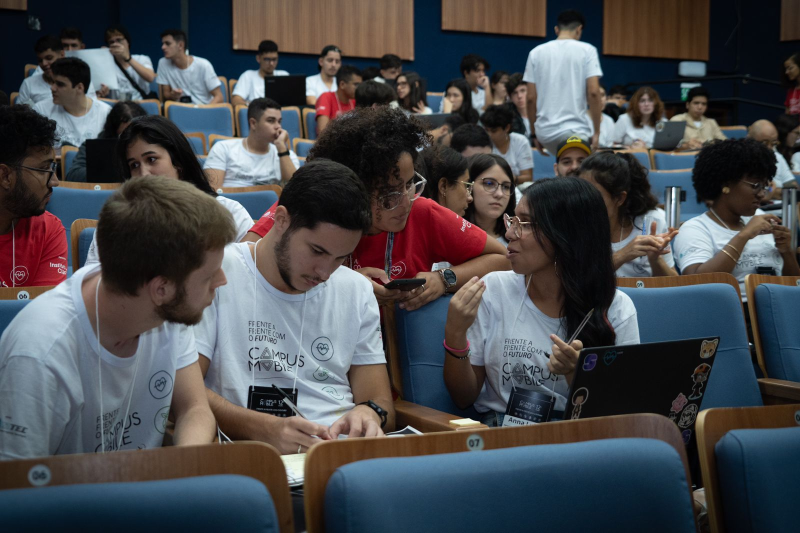

Olá! Sou Leonardo
Engenheiro de software
Sou um estudante de Ciência da Computação na Universidade Federal de Viçosa - Campus Florestal. Sempre fui apaixonado por resolver problemas lógicos, desde simples testes matemáticos na escola até desafios na área da programação. Meus principais interesses englobam as áreas de desenvolvimento de software backend e criação de jogos, embora esteja aberto a explorar novas oportunidades e desafios.
Sobre mim
Sou um estudante de Ciência da Computação na Universidade Federal de Viçosa - Campus Florestal. Sempre fui apaixonado por resolver problemas lógicos, desde simples testes matemáticos na escola até desafios na área da programação. Meus principais interesses englobam as áreas de desenvolvimento de software backend e criação de jogos, embora esteja aberto a explorar novas oportunidades e desafios.
Minhas habilidades incluem a capacidade de resolver problemas de forma lógica e eficiente, além de possuir uma curva de aprendizado rápida. Estou constantemente buscando ampliar meus conhecimentos e habilidades.
Embora ainda não tenha experiência profissional prévia, estou ansioso para iniciar minha jornada profissional por meio de um estágio. No estágio, espero poder aplicar todo o conhecimento adquirido ao longo da minha formação acadêmica, enquanto continuo aprendendo e crescendo junto à empresa. Estou pronto para enfrentar novos desafios, desenvolver novas habilidades e trabalhar em equipe.
Habilidades
HTML
CSS
JavaScript
Unity
C#
Java
C
MySql
Projetos
FaceLita 🙂
FaceLita é um jogo vencedor da competição Campus Mobile 2024 na categória saúde e inovador projetado para fornecer suporte às crianças no espectro autista. O principal objetivo é auxiliar essas crianças no processo de reconhecimento e associação de expressões faciais com diferentes emoções, transformando esse aprendizado em uma jornada educativa e envolvente. O aplicativo é utilizado como uma ferramenta de intervenção para ajudar na identificação de emoções e expressões faciais, apoiando assim o desenvolvimento e aprendizado dessas crianças.
Unity
C#

Gestão de Clientes/Serviços 🧵
Desenvolvi um sistema em Java, utilizando o padrão MVC com Swing e MySQL, e documentação com o Javadoc, para melhor gestão de serviços e clientes de uma costureira. O projeto proporciona um gerenciamento adequado das atividades, otimizando os custos com compras, solicitações dos clientes, controla os serviços e resultados. Além disso, a interface foi desenvolvida com Swing, garantindo uma experiência mais fácil pro usuário com interface amigável.
Java
MySql
Galaxy Shooter 🚀
Estou fazendo parte de uma Iniciação Científica na área de jogos, para isso fiz um curso na Udemy chamado "The Ultimate Guide to Game Development with Unity (Official)". Durante o processo percebi que não só amava jogar games como também criá-los. Ao final do módulo 2D do curso é criado um jogo de espaço naves inspirado no clássico Space Invaders. Fui além daquilo ensinado no curso e adicionei alguns inimigos a mais no jogo, caso alguém sinta curiosidade para jogar é possível baixar o jogo pelo link abaixo ou jogar pelo navegador através do site
Unity
C#


Planilha Financeira 💰
Utilizando front-end fiz um site de planilha de gastos para duas pessoas. Durante a faculdade estou morando em uma república e temos a constante necessidade de dividir contas e gastos de alimentação e de casa. Ainda não está 100% mas a parte mais importante já está feita. Existem dois tipos de compras que podem ser adicionadas, uma simples que o valor é dividido igualmente para os dois, e uma mais completa que é preciso utilizar o site da fazenda com o código da notinha referente a compra realizada, para pegar os itens comprados e dividir exatamente quem irá pagar por cada
HTML
CSS
JS
 - Leonardo Araujo Resende Aguiar_page-0001.jpg)
 - FaceLita (1)_page-0001.jpg)
 - Leonardo Araujo Resende Aguiar (1)_page-0001.jpg)
 


